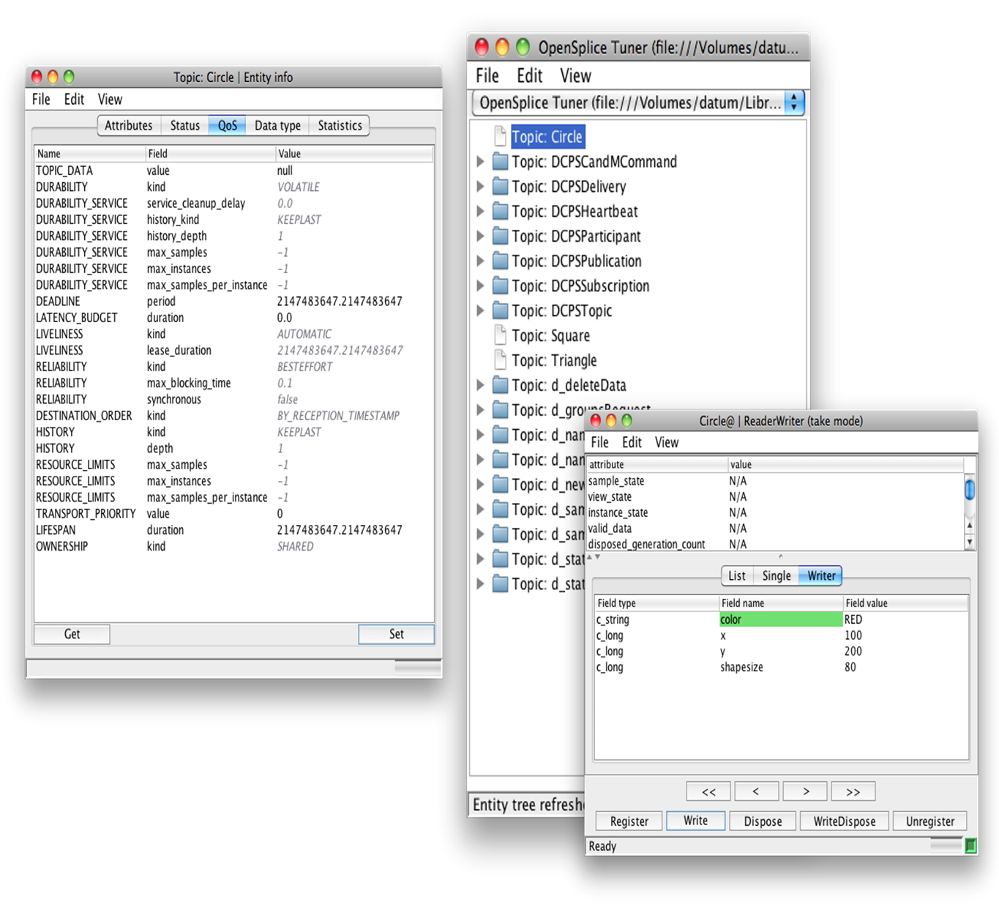

Tools
Tuner Tool
The Tuner tool , is a DDS Domain moniroting tool that allow you to
- Tune your DDS based system changing at Runtime the changeable QoSs
- Inspect on the fly all Tune DDS Entities, from DataWriters , DataReaders to Participants, Publishers and Subscribers
- Detect and help resolving QoSs Mismatch
- Create, Read and Write data for arbitrary topics
- Inject Topic Definitions
- Externalize recorded data in XML
- Inspect Statics, when enabled in your configuration
- Connect from everywhere, Add through SOAP /http secure connections
Tuner allows you to perform whitebox testing
